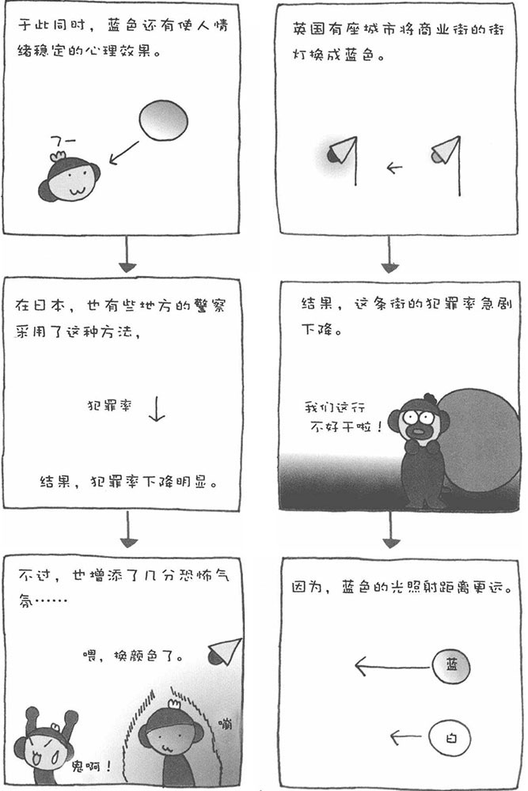
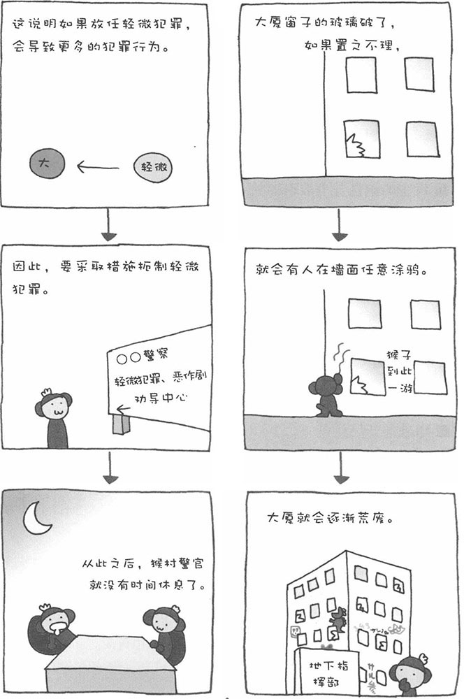

犯罪心理学，以减少和抑制犯罪、改善罪犯人格为目的，是研究犯罪心理和犯罪行为的心理学。犯罪心理学研究的范围比较广泛，其中包括罪犯的行为、实施犯罪行为的心理过程、环境因素等，以及未成年人犯罪、不良行为的心理、犯罪与社会学等。
■ 蓝色防范灯可以降低犯罪率
在英国北部某个城市有一条商业街，那里的犯罪率居高不下。当地警察想了很多办法来解决犯罪问题，但都收效甚微。后来，市政部门把这条街原有的橙色街灯全部换成了蓝色街灯，结果奇迹出现了，犯罪率急剧下降。
经过分析，其中的原因主要有：首先，蓝色街灯在夜间照射的距离更远；其次，蓝色具有抑制人类本能冲动的心理效果。总之，蓝色街灯对抑制犯罪是有效的。在日本，最早采用蓝色街灯来减少犯罪的是奈良县警察局。裉据蓝色街灯设置一年期间的数据统计，白天的犯罪率降低了15%，而夜晚的犯罪率也降低了9%。
■ 模仿犯罪的心理
不知道您是否听说过这样的事情，新闻中报道了某起案件之后，不久又发生了类似的案件。有人看到报道中的案件实施起来并不难，在得知罪犯还没有抓到时，他们也想模仿罪犯实施类似的犯罪行为。此外，也有人怀有一种与罪犯对抗的心理，心想：如果换作我，肯定比你做得好。于是，便模仿罪犯实施了犯罪行为。
模仿别人"银行账户诈骗"的罪犯，就抱有前一种心理；而模仿别人"在因特网上散布病毒"的罪犯，大多抱有后一种心理。尤其是在因特网上散布病毒或进行黑客攻击这种高技术犯罪的人中，很多人并不是真正怀有恶意，只是想满足自己的表现欲。他们是为了显示自己的计算机技术比别人高明，才实施犯罪行为的。这种犯罪往往有逐渐升级的倾向，让人深陷其中，欲罢不能。

■ 破窗理论
1969年，美国斯坦福大学的心理学家飞利浦·金巴尔德进行了一项实验。通过这一实验，他总结出人类行为的一些特点。
金巴尔德在纽约的贫民区布隆克斯区的街道上停了一辆汽车，将汽车的车牌摘掉并打开汽车的引擎盖后，他就离开了。结果，不到10分钟，汽车的蓄电池就被人偷走了。24小时后，车上所有值钱的东西被扫荡一空。后来，金巴尔德在中产阶级集中居住的加利福尼亚地区的街道上也停了一辆没有车牌、引擎盖大开的汽车。结果，一周之后，都没有人动过那辆汽车。然而，如果将车窗玻璃打碎一块的话，不管停在哪儿，很快就会有人偷走车上的东西。
还有一个类似的例子。一座大厦有一个窗子的玻璃破了，如果一直没有修理，周围的人就会觉得这座大厦没人管理。慢慢地，大厦墙面的涂鸦多了起来，内部也荒废了，最终成了滋生犯罪的温床。这就是说，如果对于轻微的犯罪置之不理，可能会导致犯罪行为的泛滥。
在这一理论的指导下，人们采取各种措施有效抑制了犯罪的发展。比如，美国纽约市交通局为了降低地铁中的犯罪率，用五年时间清除了地铁中的所有涂鸦。结果，地铁中的恶性犯罪案件大幅减少。1994年，纽约市长朱利亚诺学习了地铁中的成功经验，强化了对整座城市轻微犯罪的防范，结果使城市的犯罪率明显降低。20世纪80年代到90年代，纽约曾被冠以"犯罪都市"的恶名，经过朱利亚诺市长的治理，终于摆脱了这一不光彩的称号。
在日本的札幌，警方也采取了类似措施，加强对违章停车、轻微犯罪的治理，同样收到了良好的效果，恶性犯罪案件大为减少。
